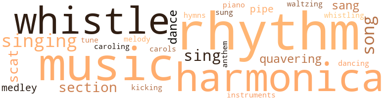
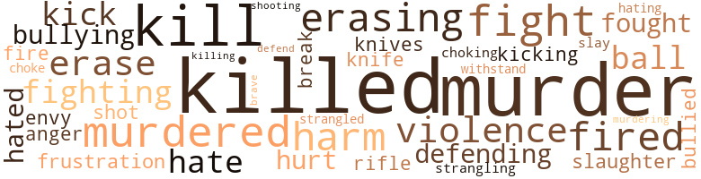
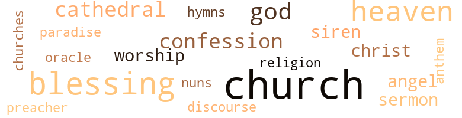

Workers (The), by Lee, Audrey (1969)
92 music-related terms matched in this text.
Most frequent terms in this topic: rhythm (12); music (10); harmonica (9); whistle (8); singing (7)
carol.n.01
Definition: joyful religious song celebrating the birth of Christ
| word | sentence |
|---|---|
| carols | " I sang Christmas carols with him . " |
caroling.n.01
Definition: singing joyful religious songs (especially at Christmas)
| word | sentence |
|---|---|
| caroling | " No thanks ! " thrusting his hands into his pockets , dallying among the flow of people , the rattle of shopping bags , recorded voices caroling . |
dance.n.01
Definition: an artistic form of nonverbal communication
| word | sentence |
|---|---|
| dance | Harvie - I went to a dance the other night . |
dance.v.03
Definition: skip, leap, or move up and down or sideways
| word | sentence |
|---|---|
| dancing | Harvie 's dexterous hands dancing over the keys , seeming to say : Let 's get on with it . |
| dance | " Every time a man asked me to dance I wanted to cry because it was n't you , because I could n't dance with the rhythm I feel for you . |
| dance | " Every time a man asked me to dance I wanted to cry because it was n't you , because I could n't dance with the rhythm I feel for you . |
harmonica.n.01
Definition: a small rectangular free-reed instrument having a row of free reeds set back in air holes and played by blowing into the desired hole
| word | sentence |
|---|---|
| harmonica | Tossing the cigarette , taking his harmonica from his pocket , blowing hard , a long wailing note , followed by another . |
| harmonica | Harvie breathing a wailing , rippling note into his harmonica . |
| harmonica | Sliding the harmonica across his lips , once , twice . |
| harmonica | I played the harmonica also . " |
| harmonica | Holding up the harmonica . |
| harmonica | Taking his harmonica from his pocket , blowing it with a wailing . |
| harmonica | You play the harmonica . " |
| harmonica | You play one note on your harmonica , then another , until you 're playing a song . |
| harmonica | You 're going to play the harmonica and I 'm going to sing . " |
hymn.n.01
Definition: a song of praise (to God or to a saint or to a nation)
| word | sentence |
|---|---|
| hymns | Work for the night is coming when mans work is done , the church bells ringing a medley of hymns . |
| anthem | We ought to make it our anthem . |
kick.v.04
Definition: kick a leg up
| word | sentence |
|---|---|
| kicking | At least he did some kicking there . |
medley.n.01
Definition: a musical composition consisting of a series of songs or other musical pieces from various sources
| word | sentence |
|---|---|
| medley | A medley of notes without melody . |
| medley | Work for the night is coming when mans work is done , the church bells ringing a medley of hymns . |
music.n.01
Definition: an artistic form of auditory communication incorporating instrumental or vocal tones in a structured and continuous manner
| word | sentence |
|---|---|
| music | You finish that song and you 've got the feeling for music . |
| music | " We 're going to make music , Harvie , of course . |
| music | " Do n't tell me you lack the courage to make music . |
| music | Since when does it take guts to make music ? |
| music | That 's all you 'll be doing is making music . |
| music | If people want to express themselves and their appreciation for our music by giving us a donation , do n't protest and do n't stop playing . |
| music | . . . " " You make good music , Guthrie . |
| music | " Then I 'd go to school and study music . " |
| music | " I 've always had an ear for music anyway . " |
| music | I wanted to get my mind from you ; but they kept playing that music we used to listen to together . |
musical_instrument.n.01
Definition: any of various devices or contrivances that can be used to produce musical tones or sounds
| word | sentence |
|---|---|
| instruments | I have an ear for instruments . |
piano.n.01
Definition: a keyboard instrument that is played by depressing keys that cause hammers to strike tuned strings and produce sounds
| word | sentence |
|---|---|
| piano | " I was born to play the piano . |
pipe.n.04
Definition: a tubular wind instrument
| word | sentence |
|---|---|
| pipe | A black-stemmed smoking pipe dented with teeth marks resting in an ash tray . |
| pipe | Half-empty packages of tobacco , pipe cleaners , loose tobacco spilled in the drawers , matches , packets of sugar , adding machine tapes , calling cards from businessmen , phone numbers of office personnel scribbled on sheets of paper . |
rhythm.n.04
Definition: the arrangement of spoken words alternating stressed and unstressed elements
| word | sentence |
|---|---|
| rhythm | Her body bereft of rhythm . |
| rhythm | " Life is rhythm . |
| rhythm | " The rhythm of being . |
| rhythm | Life is rhythm . " |
| rhythm | Could you see the rhythm ? " |
| rhythm | You know - you keep telling yourself : Life is rhythm . |
| rhythm | The rhythm of being . |
| rhythm | " Life is rhythm , " swaying her body . |
| rhythm | " The rhythm of being . |
| rhythm | " We do n't share the rhythm , the attunement that two people should share . " |
| rhythm | You 're talking about rhythm . |
| Rhythm | Rhythm is Nellie 's word . |
| rhythm | " Every time a man asked me to dance I wanted to cry because it was n't you , because I could n't dance with the rhythm I feel for you . |
scat.n.01
Definition: singing jazz; the singer substitutes nonsense syllables for the words of the song and tries to sound like a musical instrument
| word | sentence |
|---|---|
| scat | Nellie sliding onto a scat in one of the booths , taking up the dinner menu . |
| scat | " You may take your scat on the jury . " |
| scat | Harvie handing his application to the woman behind the desk , taking his scat again , watching her look over her nose at the application . |
| scat | Taking his scat again . |
section.n.01
Definition: a self-contained part of a larger composition (written or musical)
| word | sentence |
|---|---|
| section | Dare he scan the want advertisment section on the street where everyone will know he is without a job , that he is a failure ? |
| section | I wonder if you would let me have the job section of the paper , " Hardy Gallant , appealing to a startled woman looking up from her newspaper . |
| section | What would he do with the job section ? " |
| section | He is searching the want advertisement section over coffee in The Cafeteria . |
sing.v.02
Definition: produce tones with the voice
| word | sentence |
|---|---|
| sang | He sang songs . |
| sing | They were n't songs one would sing at a ladies ' tea . |
| sang | " I sang Christmas carols with him . " |
| sang | I sang . " |
| sing | You 're going to play the harmonica and I 'm going to sing . " |
| sing | We 'll sing this one first : DA DA DA da da da DA DA DA . |
| sing | One paycheck does n't make you sing on the way to the bank . |
| sing | You sing because it 's adding up . |
| sung | Of course , he had n't forgotten their having sung and played the har - monica in the street . |
singing.n.01
Definition: the act of singing vocal music
| word | sentence |
|---|---|
| singing | " It was Christmas and I felt like singing . " |
| singing | Filet of sole and singing water . |
| singing | But did n't you hear her say one day that she went singing to the bank ? |
| singing | " I 'll bet you 've got an ear for listening to your own singing . |
| singing | That 's all you 've been doing these last weeks - singing about one tiling or another . " |
| singing | " It 's not singing anyway , " Nancy indignant . |
| singing | And she would miss the singing of the birds . |
song.n.01
Definition: a short musical composition with words
| word | sentence |
|---|---|
| songs | He sang songs . |
| songs | They were n't songs one would sing at a ladies ' tea . |
| song | " That was a very nice song you composed for me , Stoncy . |
| song | You play one note on your harmonica , then another , until you 're playing a song . |
| song | You finish that song and you 've got the feeling for music . |
| song | " That is a catchy song , fellows . |
tune.n.01
Definition: a succession of notes forming a distinctive sequence
| word | sentence |
|---|---|
| melody | A medley of notes without melody . |
| tune | Harvie needing no tune when all he wants to do is blow . |
waltz.v.01
Definition: dance a waltz
| word | sentence |
|---|---|
| waltzing | Trying to keep up with this changing business leaves you feeling like you 've been waltzing with a computer . " |
warble.v.01
Definition: sing or play with trills, alternating with the half note above or below
| word | sentence |
|---|---|
| quavering | Sedimentation is death , dying , " locking her hands under her buttocks and pretending to sit , eyes closed , the brown mole resting on the end of her chin like a stunned housefly , taut , colorless lips , quavering eyeballs that will not go along with the death pretense though her eyelids be closed . |
| quavering | Grasping the doorknob , his giant shadow quavering on the door , diminishing with the dying flame . |
| quavering | Lighting another match , looking around him wall to wall , his shadow intruding , quavering in the light . |
whistle.v.01
Definition: make whistling sounds
| word | sentence |
|---|---|
| whistling | Did I tell you about the woman who heard me whistling in the woman 's lounge ? |
| whistle | The traffic policeman blowing his whistle . |
| whistle | The traffic policeman blowing his whistle , throwing up his hand , indicating that the traffic should stop . |
| whistle | A policeman 's whistle blowing the curious drivers on . |
| whistle | The policeman 's whistle . |
| whistle | The traffic policemen blowing his whistle , waving the automobiles on . |
| whistle | The warning whistle . |
| whistle | A traffic policeman blowing his whistle , telling a motorist to move on . |
| whistle | The traffic policeman blowing his whistle . |
133 violence-related terms matched in this text.
Most frequent terms in this topic: killed (21); murder (18); kill (11); fight (6); murdered (6)
anger.n.01
Definition: a strong emotion; a feeling that is oriented toward some real or supposed grievance
| word | sentence |
|---|---|
| anger | Why are you punishing mel " Turning abruptly toward Miss Watson , her eyes burning , pain and anger in her voice . |
bullying.n.01
Definition: the act of intimidating a weaker person to make them do something
| word | sentence |
|---|---|
| bullying | " It 's the man with the much-desired pot that does the bullying . |
choking.n.02
Definition: the act of suffocating (someone) by constricting the windpipe
| word | sentence |
|---|---|
| strangling | Harvie pounding on the door , running down the stops to the bottom landing , twisting the knob , thrusting the door , sprawling after it , the doorknob strangling in his fist , picking himself from the ground . |
defy.v.01
Definition: resist or confront with resistance
| word | sentence |
|---|---|
| withstand | The shoes could withstand it . |
envy.n.01
Definition: a feeling of grudging admiration and desire to have something that is possessed by another
| word | sentence |
|---|---|
| envy | You 'll be the envy of the party . |
erase.v.01
Definition: remove from memory or existence
| word | sentence |
|---|---|
| erasing | Still writing , crossing out words , rereading , restructuring , erasing . |
| erase | When you type these , do n't erase . |
| erasing | You 've been doing a lot of erasing . " |
| erase | " But sometimes I have to erase . " |
| erasing | It does n't look good to whoever has to read it , when there 's erasing . |
| erasing | I ca n't work without erasing . |
| erasing | She never said any tiling about my erasing before . " |
| erase | He will wash his face in The Cafeteria rest room , erase the nightmare from his face . |
| erase | She does not have to erase . |
fight.n.02
Definition: the act of fighting; any contest or struggle
| word | sentence |
|---|---|
| fighting | You 're the tangible truth of man fighting against dehumanization by a rampant technological , mechanical civilization . " |
fight.n.05
Definition: a boxing or wrestling match
| word | sentence |
|---|---|
| fight | Harvie Guthrie waiting at the traffic fight , his whole being wavering between alternatives . |
| fight | " I grabbed her by the throat to choke one protest from her , a fight for her life . |
| fight | Are you going to die without a fight ? |
fight.v.02
Definition: fight against or resist strongly
| word | sentence |
|---|---|
| fought | Great questions and issues are being raised and fought for . |
| fighting | Essie , majestic woman of the lower echelon , rough hands fighting through discarded papers , dust and ashes . |
| fight | To some men life takes on meaning , significance , when they forfeit it and then fight to reclaim it . |
| fight | You ca n't fight front office , Anne . " |
| fought | But you ought to have stayed and fought . " |
| fight | " How do you fight a prejudice ? |
| Defend | Defend his right to work , to live ? |
| defending | I 'm not only defending a man this time . |
| defending | I 'm defending the embodiment of truth . |
| fighting | This is what Harvie Guthrie was fighting - a life in vain . |
fracture.n.01
Definition: breaking of hard tissue such as bone
| word | sentence |
|---|---|
| break | With me , Guthrie , it was just a bad break . |
frustration.n.03
Definition: a feeling of annoyance at being hindered or criticized
| word | sentence |
|---|---|
| frustration | She makes him forget his frustration . |
gag.v.06
Definition: cause to retch or choke
| word | sentence |
|---|---|
| choking | The movement of heavy cargo trucks passing , the street vibrating , the trucks ' gears choking . |
| choke | " I grabbed her by the throat to choke one protest from her , a fight for her life . |
harm.v.01
Definition: cause or do harm to
| word | sentence |
|---|---|
| harm | " I do n't want to wrinkle it " " You ca n't harm it . |
hate.v.01
Definition: dislike intensely; feel antipathy or aversion towards
| word | sentence |
|---|---|
| hates | " You know how Tony hates mission houses . |
| hate | " Who is the person you hate most of all ? " |
| hating | I get up every morning hating it because I know that I will spend the whole day doing work that does n't mean anything to me . |
| hated | I knew you did n't love me ; but I never thought you hated me . |
| hate | You must hate me deeply to want to make me suffer like this . |
| hated | " Have you ever seen someone you pitied and hated at the same time , Nellie ? " |
hurt.v.04
Definition: cause damage or affect negatively
| word | sentence |
|---|---|
| hurt | If he knew you thought like that he 'd be hurt . " |
injury.n.01
Definition: any physical damage to the body caused by violence or accident or fracture etc.
| word | sentence |
|---|---|
| harm | What harm would it do if we talked ? " |
| harm | Five should n't do you any harm on Christmas Eve . " |
| harm | She could n't have done any harm . " |
| harm | " He did n't mean any harm , Elbo . |
kick.v.04
Definition: kick a leg up
| word | sentence |
|---|---|
| kicking | At least he did some kicking there . |
kick_back.v.02
Definition: spring back, as from a forceful thrust
| word | sentence |
|---|---|
| kick | Harvie is ten minutes early , has time to kick his stall before entering it . |
| kick | I could kick myself . " |
| kick | " I still say I ought to kick myself . |
kill.v.10
Definition: cause the death of, without intention
| word | sentence |
|---|---|
| kill | " He made you see the inequities of life and you wanted to kill everything that was n't humane , that was n't excellent . |
| killed | " And do n't forget the time Tank made that whiskey or whatever he called it that nearly killed us all - " " And Tank was really near dead . " |
| killed | She was killed first and then dumped in the river , they say . " |
| killed | She did n't have nobody , so I guess whoever killed her figured they could get away with it - like she just disappeared . " |
| killed | " You killed her ? |
| killed | You could n't have killed her , Harvie . |
| kill | What reason would you have to kill her ? " |
| killed | " I killed her to save myself . " |
| killed | " So you killed her for that ? |
| killed | I followed her home and I killed her . " |
| kill | You would n't kill anybody . " |
| killed | If I were a stranger , you would n't care whether I killed her or not . " |
| killed | Now you 're telling me that you killed an innocent old woman for no reason at all . " |
| killed | " He says that he killed Gertrude Swank . " |
| killed | " Now , Mr. Guthrie , you said you killed Gertrude Swank ? " |
| killed | " Yes , I killed her . " |
| kill | " Why did you kill her ? " |
| killed | I killed her and I want to sign a confession . |
| kill | I want to be arrested so that I wo n't kill anybody else . " |
| kill | Now he says he did n't kill that Gertrude Swank . |
| killed | " I do n't think he killed anybody , Jim . " |
| killed | He was a little eccentric , but that does n't mean he killed Gertrude Swank . " |
| kill | Harvie Guthrie - only now he says he did n't kill her . " |
| kill | Now , did you kill Gertrude Swank ? " |
| kill | I did n't kill her . |
| kill | " Now suppose you did kill Gertrude Swank because she was doing mediocre work . |
| killed | Suppose you killed her because she was ugly and useless to everyone including herself , which suggested that even before you killed her she had no life ? |
| killed | Suppose you killed her because she was ugly and useless to everyone including herself , which suggested that even before you killed her she had no life ? |
| kill | But kill her and the taking of that breath is the reality . |
| killed | " Do you remember where you were the night she was killed ? " |
| killed | " I told her before I gave myself up that I killed Gertrude Swank . " |
| killed | " But did you have to go this far , say you killed somebody ? |
| Killing | " Killing time . |
knife.n.02
Definition: a weapon with a handle and blade with a sharp point
| word | sentence |
|---|---|
| knives | " Here 's the cupboard - pots and pans , forks and knives . |
| knife | Thinking of Nellie blending with a crowd on her way home to cook her dinner ; Nellie methodically preparing the meat , vegetables , carefully setting the table with knife , fork , spoon , napkin , and studying the table to see if she has forgotten anything . |
murder.n.01
Definition: unlawful premeditated killing of a human being by a human being
| word | sentence |
|---|---|
| Murder | Murder and create . " |
| murder | He is reading the account of the murder for the fourth time , studying it . |
| murder | Soaring to keep abreast of the era of rampant innovation and murder . |
| murder | A time to murder and recreate . |
| murder | Remember what I said about murder and creation ? |
| murder | It 's a time of murder and creation , rockets , computers . |
| Murder | Murder is involved . " |
| murder | " Why would she think you 'd confess murder to hurt her ? " |
| murder | " . . . We ask you to bring in a verdict that the defendant is guilty of murder in the first degree . " |
| murder | That is why you were chosen to liberate that man , Harvie Guthrie , from the charge of murder . |
| murder | " Yet at the same time this is not a murder trial . |
| murder | This is not a murder trial . |
| murder | " So when he read that Gertrude Swank was dead - and that the murderer was still at large - he saw a chance to give his life meaning , to give his life momentum by laying it in jeopardy , by confessing to a murder that he did not commit . " |
| murder | This is a forum for a man who sought meaning , fulfillment of his life even in these times of murder and creation , of technology outdistancing human assimilation . " |
| murder | So we murder injustice and create justice which is responsible and which considers everyone . |
| murder | This man with so much creative ' potential in his hands , hands whose only violence on the night of the murder of Gertrude Swank was to batter a windowpane in the apartment of Nellie Worth , his love . |
| murder | But , of course , you know that he did not murder Gertrude Swank . |
| murder | Instead , he seized upon the sensation of the murder of Gertrude Swank , and having already been provided with newspaper accounts of the tragedy , confessed to her murder to gain a response to his own static existence , to the meaninglessness of his life , to his own torment , to his inner cries for help . |
| murder | Instead , he seized upon the sensation of the murder of Gertrude Swank , and having already been provided with newspaper accounts of the tragedy , confessed to her murder to gain a response to his own static existence , to the meaninglessness of his life , to his own torment , to his inner cries for help . |
| murder | And truth would murder no one . |
murder.v.01
Definition: kill intentionally and with premeditation
| word | sentence |
|---|---|
| slay | So she would slay home to look after her interests each evening , taking care to count the one-hundred-dollar bills , total six thousand dollars . |
| murdered | Police have found six thousand dollars under a rug in the bedroom of the murdered Gertrude Swank , sixty , an employee of The Cafeteria Restaurant in Center City where she worked as a bus girl . |
| murdering | " Hold him on suspicion of murdering Gertrude Swank . " |
| murdered | I 've never met anybody who murdered somebody . |
| murdered | He murdered her . |
| murdered | " They found the man who murdered that old dame - that Gertrude Swank . |
| murdered | True , Gertrude Swank is dead , was murdered by a person or persons not yet apprehended . |
| murdered | " Were Harvie Guthrie a man other than the man he is - creator , worker , lover of humanity and human beings - he might have murdered Gertrude Swank . |
musket_ball.n.01
Definition: a solid projectile that is shot by a musket
| word | sentence |
|---|---|
| ball | The sun is a yellow ball overhead . |
| ball | Shooting another ball , docs not care where it goes . |
| ball | The man playing the pinball machine next to his is intent upon the game , aggressive , demanding , concentrating upon the ball . |
open_fire.v.01
Definition: start firing a weapon
| word | sentence |
|---|---|
| fire | She might fire me and place a machine at my desk . " |
| fired | " I mean , you 're fired if you do n't produce . " |
| fired | He fired me , did n't he ? |
| fired | " Now , Davidson , you recognize Harvie Guthrie as the man you fired . |
| fired | Am I fired ? " |
| Fired | Fired from his job on Christmas Eve . |
pain.v.02
Definition: cause emotional anguish or make miserable
| word | sentence |
|---|---|
| hurt | Try not to hurt him . " |
rifle.n.01
Definition: a shoulder firearm with a long barrel and a rifled bore
| word | sentence |
|---|---|
| rifle | The rifle for the salute is ready . |
shoot.v.02
Definition: kill by firing a missile
| word | sentence |
|---|---|
| shot | It 's been shot once . |
shooting.n.02
Definition: killing someone by gunfire
| word | sentence |
|---|---|
| Shooting | Shooting another ball , docs not care where it goes . |
slaughter.n.03
Definition: the savage and excessive killing of many people
| word | sentence |
|---|---|
| slaughter | " We 'd better be quick , " passing The Oyster Bed restaurant , the slaughter houses , cargo trucks . |
strangle.v.01
Definition: kill by squeezing the throat of so as to cut off the air
| word | sentence |
|---|---|
| strangled | The murderer was probably angered because she would not tell where the money was ; so he strangled her , literally broke her neck ; then threw her in the river to cover up his crime . |
strong-arm.v.02
Definition: be bossy towards
| word | sentence |
|---|---|
| bullied | We know when we 've been bullied . |
| bullying | It 's the man with the pot that does the bullying every time . " |
violence.n.01
Definition: an act of aggression (as one against a person who resists)
| word | sentence |
|---|---|
| violence | " Harvie has some violence in him , of course . |
| violence | He has some violence in him , of course . |
| violence | Ask Nellie about the powerful hands of Harvie Guthrie , those restless hands that sought appeasement in her warmth , hands that created ' The Workers , ' hands whose only violence erupted upon the keys of an adding machine day after day . |
| violence | This man with so much creative ' potential in his hands , hands whose only violence on the night of the murder of Gertrude Swank was to batter a windowpane in the apartment of Nellie Worth , his love . |
weather.v.01
Definition: face and withstand with courage
| word | sentence |
|---|---|
| brave | " You 're a brave young lady . |
54 religion-related terms matched in this text.
Most frequent terms in this topic: church (12); blessing (6); God (4); confession (3); cathedral (3)
blessing.n.05
Definition: the act of praying for divine protection
| word | sentence |
|---|---|
| blessing | But first , with your permission , may I ask Tony to say blessing over the pot ? " |
| blessing | So why say blessing ? |
| blessing | I got a choice ; so say the blessing so we can eat . " |
| blessing | " All in favor of saying blessing say ' I. ' " " I. " " Overwhelming . |
| blessing | Tony , please say the blessing . " |
| blessings | But true marriage is the capitulation of the heart and no matter how many words the minister reads , no matter what blessings he offers to their marriage , Feme gave her heart long ago . |
| blessing | " All right , Tony will say blessing . " |
cathedral.n.02
Definition: the principal Christian church building of a bishop's diocese
| word | sentence |
|---|---|
| cathedral | The bells tolling in the cathedral where the body of the dead worker lies , the late leader of the lowly employed , the underpaid , the unemployed . |
| cathedral | The clock on the cathedral tolling twelve . |
| cathedral | The bells tolling in the cathedral . |
church.n.02
Definition: a place for public (especially Christian) worship
| word | sentence |
|---|---|
| church | Work for the night is coming when mans work is done , the church bells ringing a medley of hymns . |
| church | But will you have time to get the invitations printed - you 're going to have a church wedding , are n't you ? " |
| church | The wedding guests , who are members of the church congregation remaining after the morning worship and strangers to the future bride and groom , are growing restive in their wooden seats . |
| church | Putting the cigarette between her lips , looking at the discarded j church programs lying on the steps , at the families passing by , having left other churches . |
| church | An usher coming to the church door , stepping outside , lighting a cigarette . |
| church | I suppose they wanted to be married in church , so he picked this one . " |
| church | The ushers have left their stations and are congregating in the rear of the church , one disengaging himself from conversation to escort Sarah to her seat , returning again to the conversation . |
| church | Sarah Himes taking a cigarette from her purse , remembering that she is in church , dropping it into her purse again . |
| church | Anne nodding , moving away , making room for others , leaving the church , joining Sarah on the sidewalk studying her new patent leather pumps . |
| church | He 's talking about pews like he was talking about church . " |
church.n.04
Definition: the body of people who attend or belong to a particular local church
| word | sentence |
|---|---|
| churches | Putting the cigarette between her lips , looking at the discarded j church programs lying on the steps , at the families passing by , having left other churches . |
| church | " Is this his church ? " |
| church | Is she a member of this church ? " |
confession.n.05
Definition: the document that spells out the belief system of a given church (especially the Reformation churches of the 16th century)
| word | sentence |
|---|---|
| confession | " This man says he has a confession . " |
| confession | I want to sign a confession . |
| confession | I killed her and I want to sign a confession . |
eden.n.01
Definition: any place of complete bliss and delight and peace
| word | sentence |
|---|---|
| paradise | You 're a bird of paradise . |
| heaven | My maid goes home at three ; and heaven knows what time she gets there , since I 'm not there to know . " |
| Heaven | Heaven knows she has her mother 's genes . |
| heaven | Then for heaven 's sake go to her . |
| Heaven | For every goodness you do , madam , you receive that many more in Heaven . " |
| Heaven | You 're storing your treasures in Heaven , " rushing across the street to the saloon . |
god.n.03
Definition: a man of such superior qualities that he seems like a deity to other people
| word | sentence |
|---|---|
| God | God made man after His own image , and man made things after his concept , needs . |
| God | God bless you . |
| God | If you haven t got a ha ' penny , well , God bless you ! |
| God | Still , God is good to us . " |
heaven.n.02
Definition: the abode of God and the angels
| word | sentence |
|---|---|
| heavens | Thank heavens we have Harvie to help us with the work . " |
hymn.n.01
Definition: a song of praise (to God or to a saint or to a nation)
| word | sentence |
|---|---|
| hymns | Work for the night is coming when mans work is done , the church bells ringing a medley of hymns . |
| anthem | We ought to make it our anthem . |
messiah.n.01
Definition: any expected deliverer
| word | sentence |
|---|---|
| Christ | Remember the Infant Christ wrapped in swaddling clothes and laid in a manger because there was no room at the inn - and He was worthy . |
| Christ | There 's got to be room for people like us , but what can we expect , if there was no room in the inn for Christ ? " |
nun.n.01
Definition: a woman religious
| word | sentence |
|---|---|
| nuns | Two nuns pointing toward the river , their black habits fluttering in the wind . |
preacher.n.01
Definition: someone whose occupation is preaching the gospel
| word | sentence |
|---|---|
| preacher | " I told you lie 's a preacher . " |
prophet.n.01
Definition: an authoritative person who divines the future
| word | sentence |
|---|---|
| oracle | And he kept saying to Harvie that he had to keep in touch , kept using the expression keep in touch , as if it were an oracle . |
religion.n.01
Definition: a strong belief in a supernatural power or powers that control human destiny
| word | sentence |
|---|---|
| religion | Tm not asking that you get religion . |
saint.n.02
Definition: person of exceptional holiness
| word | sentence |
|---|---|
| angel | The elevator operator adjusting his hearing aid , his thinning white hair soft as angel hair nodding at Harvie , smiling , sliding shut the elevator door . |
| angels | Hark the herald angels . |
sermon.n.01
Definition: an address of a religious nature (usually delivered during a church service)
| word | sentence |
|---|---|
| discourse | One usually calls to mind an intangible called truth and tries to apply it by argument or by example to a discourse or deed . |
sermon.n.02
Definition: a moralistic rebuke
| word | sentence |
|---|---|
| sermon | " If you say a word to Hardy , he gives you a sermon . " |
| sermon | We do n't want him to preach a sermon , and that 's what we 'll get without any coaxing . " |
siren.n.01
Definition: a sea nymph (part woman and part bird) supposed to lure sailors to destruction on the rocks where the nymphs lived
| word | sentence |
|---|---|
| siren | A siren calling priority of passage for the ambulance bearing the body of the dead woman to the morgue . |
| siren | The siren is screaming . |
worship.n.01
Definition: the activity of worshipping
| word | sentence |
|---|---|
| worship | The wedding guests , who are members of the church congregation remaining after the morning worship and strangers to the future bride and groom , are growing restive in their wooden seats . |
| worship | Everybody else is part of the morning worship . |